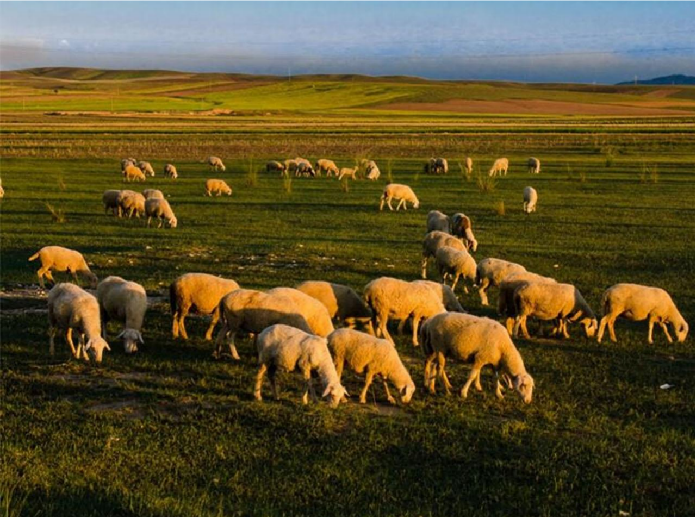

田野走访「我不是专家，只是个记录者」
2025年秋天，在西安实习的某个夜晚，我格外想念家乡那一碗热气腾腾的手抓羊肉。那一刻我意识到，我对滩羊的了解竟如此肤浅。
于是，我给自己定下了一个目标：用一年的时间，以一名普通宁夏青年的视角，重新认识、记录、探索宁夏滩羊的方方面面——从牧场到餐桌，从历史到未来。
这个博客，就是我的探索笔记。欢迎你和我一起，重新认识这片土地上最特别的生命。
我的探索旅程
2025.10
🚀 启程：第一口乡愁
在西安的宁夏餐厅吃了顿"解乡愁"的滩羊，味道总觉得差了点意思。决定开始这个项目。
2025.11
🌾 田野走访：盐池牧场初体验
寒假回家，第一次真正走进盐池的滩羊牧场，与养殖户老马聊了一下午。他说："滩羊吃的是中草药，喝的是矿泉水。"
2026.01
🍲 风味实验：三次失败的红焖羊肉
在自家厨房经历了三次失败后，终于做出了满意的红焖滩羊肉。记录了完整的实验过程与心得。
2026.03
📅 正在进行：滩羊24节气食谱
尝试根据24节气，为滩羊设计不同的烹饪方式。目前已完成6个节气，春分的清炖羊肉效果最佳。
最新探索笔记
 风味实验
风味实验
文史钩沉
 数据漫谈
数据漫谈
探索入口
我探索滩羊，也是在探索我自己
通过滩羊，我重新认识了我的家乡，理解了什么是"风物"，也找到了记录和表达的方式。
这个项目会持续一年，或者更久。我不确定最终会走向哪里，但这个过程本身，就是意义。
了解更多我的故事